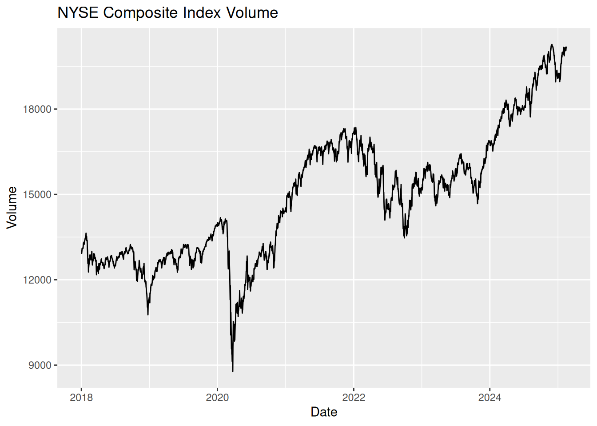
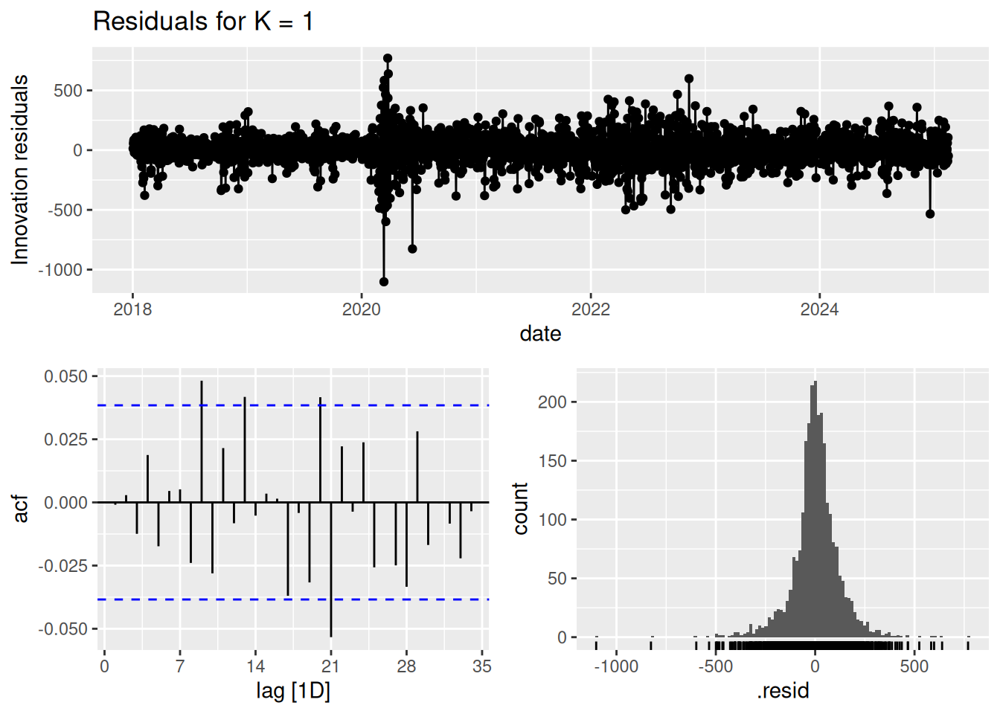
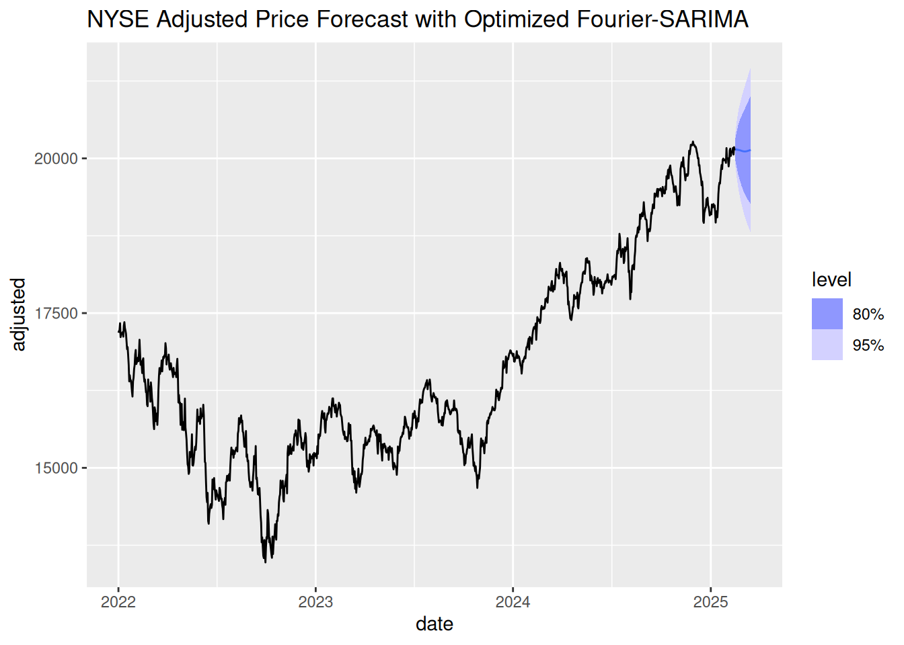
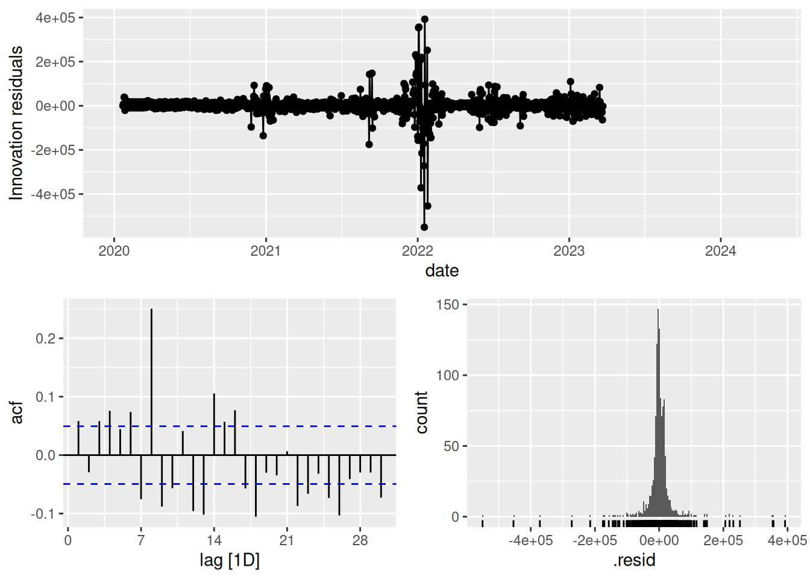

# Time Series Essentials, install if needed!
library(feasts) # Feature extraction & decomposition
library(fable) # Forecasting models (ARIMA, ETS, etc.)
library(fpp3) # Tidy time series dataseta
library(astsa) # Applied statistical TS methods from textbook
library(tseries) # Unit root tests & TS diagnostics
library(tsibbledata) # Curated TS datasets
library(quantmod) # Financial data retrieval
library(tidyquant) # Financial analysis in tidyverse
library(purrr) # Functional programming for TS pipelines
library(readr) # Efficient data importActivity13
Seasonal Modeling
Seasonality = Repeating patterns with fixed known periods (e.g., daily, weekly, yearly cycles). Differentiated from cycles by strict periodicity.
1. Fourier Spectral Analysis
Frequency domain decomposition using basis functions:
\[S(t) = \sum_{k=1}^K [a_k\cos(2\pi f_k t) + b_k\sin(2\pi f_k t)]\]
Critical parameters:
- Nyquist frequency: Max detectable frequency = \(f_{\text{max}} = \frac{1}{2\Delta t}\)
- Frequency resolution: \(\Delta f = \frac{1}{N\Delta t}\)
- Number of harmonics (K): Balances complexity vs. overfitting
Harmonics represent pairs of sine/cosine waves that collectively approximate complex seasonal patterns. Think of them as “building blocks” for seasonal shapes. We can capture periodic patterns in time series data using Fourier terms and periodic regressions. Fourier terms in regression models:
\[y_t = \beta_0 + \sum_{k=1}^K \beta_k\cos(2\pi kt/m) + \gamma_k\sin(2\pi kt/m) + \epsilon_t\] where \(m\) = seasonal period
Hybrid Approach: Combines Fourier terms (deterministic seasonality) with ARIMA (stochastic patterns):
\[y_t = \underbrace{\sum_{k=1}^K [\alpha_k\sin(2\pi kt/m) + \beta_k\cos(2\pi kt/m)]}_{\text{Fourier terms}} + \underbrace{\text{ARIMA}(p,d,q)(P,D,Q)_m}_{\text{Seasonal ARIMA}} + \epsilon_t\]
Datasets & Models
-
Finance Example (Intraday)
-
Dataset:
nyse(Stock Volume) - Model: \[ y_t = \beta_0 + \sum_{k=1}^2\Big[\alpha_k\sin\Big(\frac{2\pi kt}{78}\Big) + \beta_k\cos\Big(\frac{2\pi kt}{78}\Big)\Big] \]
- Activity: Optimize Fourier terms via cross-validation.
-
Dataset:
We retrieve real NYSE Composite index data (ticker ^NYA), extract the adjusted price, and apply Fourier regression to capture seasonal patterns.
# 1. Get NYSE Composite index data (volume) from tidyquant and convert to tsibble
nyse <- tq_get("^NYA", from = "2018-01-01") %>%
as_tsibble(index = date) %>%
fill_gaps() %>%
mutate(adjusted = imputeTS::na_ma(adjusted, k = 21))
# Plot adjusted series
nyse %>%
autoplot(adjusted) +
labs(title = "NYSE Composite Index Volume", y = "Volume", x = "Date")
Fit seasonal models using Fourier terms (using 1 and 2 harmonics) with cross-validation for model selection.
- K=1 → \(\cos(2\pi t/52)\), \(\sin(2\pi t/52)\)
- K=2 → Adds \(\cos(4\pi t/52)\), \(\sin(4\pi t/52)\)
# 2. Define seasonal period (business days/year ≈ 252)
period <- 30 # Annual seasonality in trading days
# 3. K Optimization via AICc
aic_results <- map_dfr(1:10, function(k) {
fit <- nyse %>%
model(
ARIMA(
adjusted ~ fourier(K = k, period = period) +
pdq(0:5, 0:2, 0:5) + PDQ(0:2, 0:1, 0:2)
)
)
glance(fit) %>%
mutate(K = k)
})
optimal_k <- aic_results %>%
filter(AICc == min(AICc)) %>%
pull(K)# 6. Diagnostic Visualization
final_model %>%
gg_tsresiduals() +
labs(title = paste("Residuals for K =", optimal_k))
final_model %>%
forecast(h = period) %>% # 1-year forecast
autoplot(nyse %>% filter(year(date) >= 2022)) +
labs(title = "NYSE Adjusted Price Forecast with Optimized Fourier-SARIMA")
Lab Activities
Task: For the following COVID data, compute daily new confirmed cases, and try fitting the periodic regression with Fourier terms with different seasonal periods (e.g., 7-day vs. 14-day cycles) and compare the residual diagnostics.
We have invested a lot of time and effort in creating COVID-19 Data
Hub, please cite the following when using it:
Guidotti, E., Ardia, D., (2020), "COVID-19 Data Hub", Journal of Open
Source Software 5(51):2376, doi: 10.21105/joss.02376
The implementation details and the latest version of the data are
described in:
Guidotti, E., (2022), "A worldwide epidemiological database for
COVID-19 at fine-grained spatial resolution", Sci Data 9(1):112, doi:
10.1038/s41597-022-01245-1
To print citations in BibTeX format use:
> print(citation('COVID19'), bibtex=TRUE)
To hide this message use 'verbose = FALSE'.library(COVID19)
covid_data <- covid19(verbose = FALSE)
covid <- covid_data %>%
filter(administrative_area_level_1 == "United States") %>%
as_tsibble(index = date) %>%
mutate(cases = difference(confirmed)) # Daily new cases
# Compare 7 vs 14-day cycles
covid_models <- covid %>%
model(
Weekly = ARIMA(cases ~ fourier(7, K = 3) + pdq()),
Biweekly = ARIMA(cases ~ fourier(14, K = 5) + pdq())
)
# Best model diagnostics
covid_models %>%
select(Weekly) %>%
gg_tsresiduals()
References
Guidotti, E., Ardia, D., (2020), “COVID-19 Data Hub”, Journal of Open Source Software 5(51):2376, doi: 10.21105/joss.02376